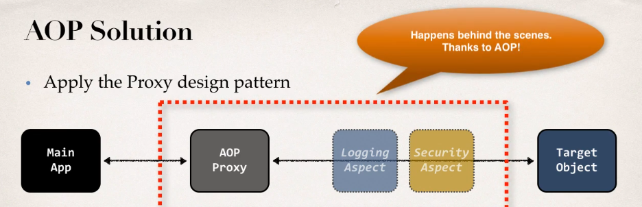

Aspect-Oriented Programming is a programming technique based on the concept of an Aspect (that is something that encapsulated cross-cutting logic/functionality, which means logic that affect the project transversally like logging or security).
What AOP does behind the scenes is call methods from the classes/aspects (like a logging class) whenever a method is called (this depends on the configuration):

- Reusable modules
- Resolve code tangling
- Resolve code scatter
- Applied selectively based on configuration
- Too many aspects and app flow is hard to follow
- Minor performance cost for aspect execution
- Aspect: module of code for a cross-cutting concern (logging, security...)
- Advice: what action is takes and when it should be applied
- Joint Point: when to apply code during program execution
- Pointcut: a predicate expression for where advice should be applied
- Before advice: run before the method
- After finally advice: run after the method (like finally clause in try catch)
- After returning advice: run after the method (success execution)
- After throwing advice: run after the method (if exception if thrown)
- Around advice: run before and after the method
It refers to the connection being made between aspects and target objects to create an advised object. There are different types:
- Compile-time
- Load-time
- Run-time
Note that the slowest is the run-time weaving
- Keep the code inside the advices small
- Keep the code fast
- Do not perform any expensive/slow operations